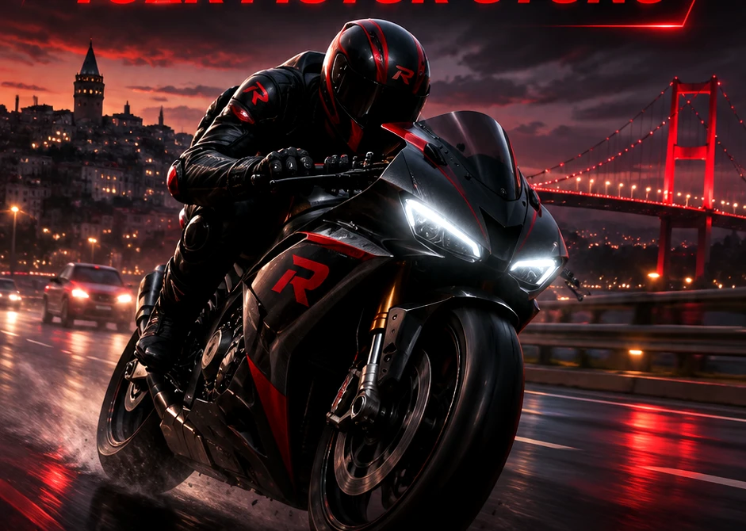
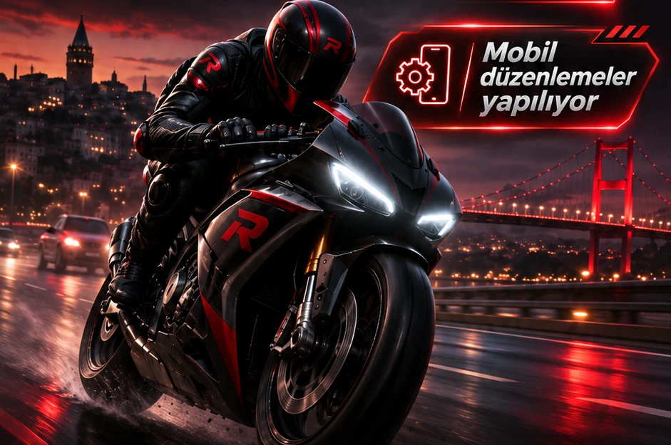

VİRAJI YAŞA.
Dinamik yatış, gidon tepkisi ve motosikletle birlikte hareket eden sürücü.

REVORA MOTO: gerçekçi sürüş hissi, güçlü motor karakterleri, geniş yollar ve sınırlarını zorlayacağın bir motosiklet deneyimi.
Motorun tepkisinden virajdaki yatışına kadar her şey seni sürüşün içine çekmek için geliştiriliyor.
Dinamik yatış, gidon tepkisi ve motosikletle birlikte hareket eden sürücü.
Şehir caddeleri, otoban yolları ve farklı sürüş ortamları.
Wheelie, kontrollü arka lastik kayması, vites ve gaz tepkileri.

Farklı motor karakterleri, kişiselleştirilebilir sürüş ve gelişmeye devam eden bir dünya. REVORA MOTO, oyuncuların geri bildirimleriyle büyüyor.
Kurulumlu Windows sürümünün yayın durumunu ve indirme bilgilerini incele.